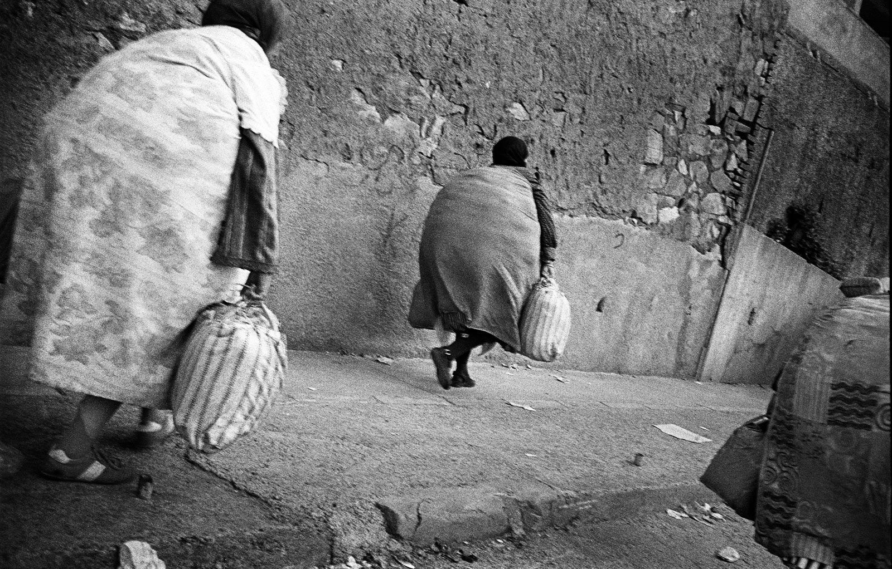
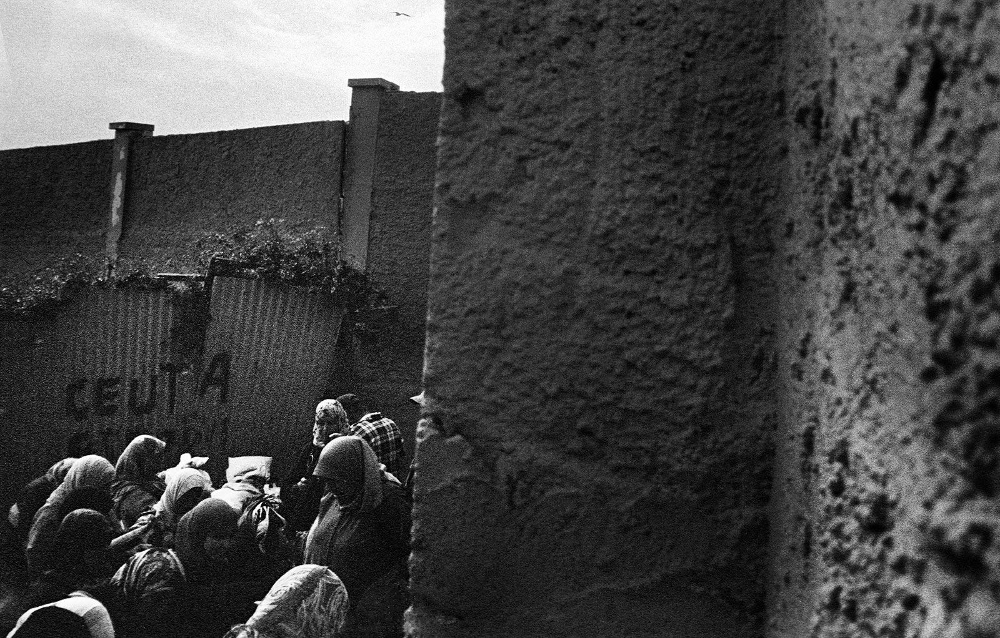
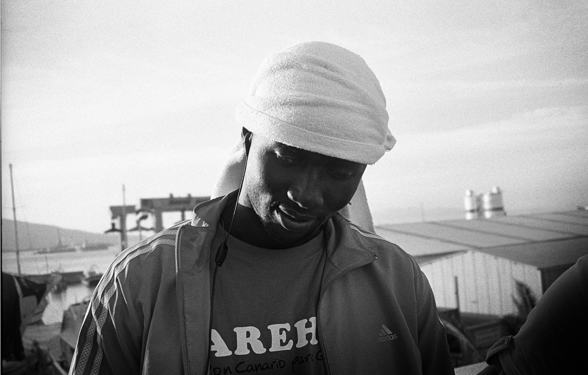
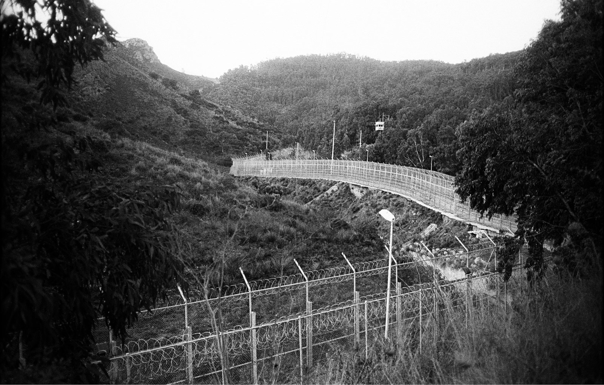
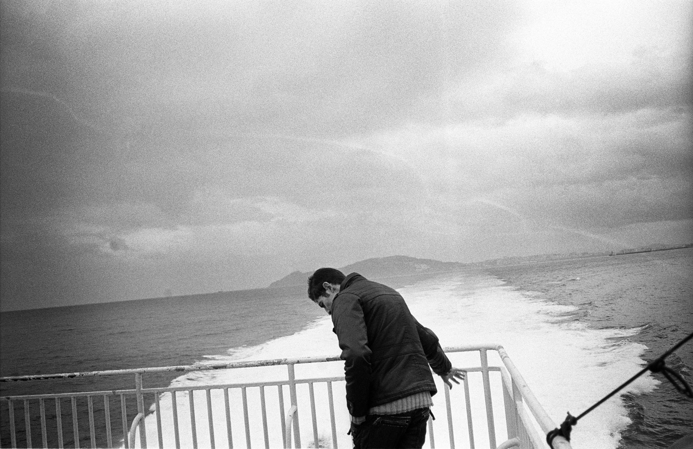

Польский социолог Тадеуш Коханович (Tadeusz Kochanowicz) рассказывает о cоблазнах современного культурного расизма.
Отличительная черта дискриминационных дискурсов — их непоследовательность и расплывчатость. С одной стороны, это сложно назвать чем-то удивительным, ведь их природа сама по себе иррациональна; с другой — именно в силу этой неопределённости они с трудом поддаются описанию. Ключевым понятием, устанавливающим сегодня рамки дискриминационных дискурсов, является политическая корректность. Расисты всё более умело приспосабливаются к ситуации в политическом мейнстриме, чтобы иметь возможность распространять свои идеи и при этом не быть заклеймёнными экстремистами. По этой причине сегодня мы наблюдаем расизм главным образом на уровне риторики, а не на улице, — хотя эти его проявления неизбежно идут рука об руку.
Противоречивые обобщения
Современный расизм основывается на допущении, что по природе своей представители отдельно взятого народа принадлежат к определённой культурной группе. Вероятно, это покажется не таким уж спорным, более того — довольно естественным. Однако, основываясь на этом предположении, очень легко поддаться соблазну объяснить «культурным фактором» такие проблемы, как безработица, бедность и дискриминация.
Согласиться с этим утверждением значит оказаться в одном шаге от заявления, будто одна этническая группа состоит из патологических лентяев, а другой не под силу принимать самостоятельные решения.

Подобная квазиантропологическая аргументация как новая форма существования расизма имеет давние традиции. Вспомните, например, систему апартеида в Южной Африке, целью которой провозглашалась защита культурной самобытности и права на независимое развитие различных этнических групп, населяющих эту страну. Следствием такого намерения стала расовая сегрегация. Этого факта, похоже, не замечают европейские политики, которые в западных государствах говорят о «невозможности адаптировать ислам к условиям либеральной демократии», а в восточных — о том, что рома [1] «не хотят учиться и работать».
Несмотря на гибкость и разнообразие расистского дискурса, у всех его проявлений есть и кое-что общее: представление о культурном детерминизме. Безусловно, этимология понятия «расизм» имеет биологические корни. Именно этот аргумент приводят в свою защиту современные последователи расистской идеологии. Биологии они противопоставляют общее христианское или иудео-христианское наследие Европы, а порой даже идеологическое наследие французской буржуазной революции. В обоих случаях суть такой «идеологической общности» сводится к тому, что всем остальным, а особенно некоторым этническим и религиозным группам, доступ к ней закрыт.
Современные исследователи соглашаются, что «раса» является искусственно созданной категорией и в большей степени служит идеологическим инструментом, нежели научным термином. Таким образом понятной становится претензия расизма к последователям «защиты этнического разнообразия» как принципа конструирования и поддержания общественного уклада.
Самое слабое место всей идеологии культурного расизма — это склонность к обобщению: сторонники этой теории говорят о неспособности одной этнической группы приспособиться к правилам, на которых зиждется общество, построенное другой этнической группой. Однако обоснований своей точки зрения они не приводят. Обычно мы слышим всё те же примеры неприспособления, часто весьма противоречивые. Например, мигрантам ставят в упрёк нежелание работать, но вместе с тем говорят, что они крадут работу у коренных жителей. Выходцев из арабских стран обвиняют в том, что они не признают отделения религии от государства и запрета на моление в публичных местах.
Доводы культурных расистов обычно не содержат веских обоснований — вероятно, потому, что их взгляды абсолютно иррациональны.
Чем занимаются расисты?
Расистский дискурс может проявляться в различных формах, но упомянутая выше модель европейского единства, как правило, выражается в идеологическом и административном аспектах. Идеологический аспект в большей степени относится к мусульманам в Западной Европе, а административный — к рома в Восточной Европе. Данное различие вовсе не отрицает одновременного существования обеих форм дискриминации. Как это было в довоенной Польше, где антисемитизм и дискриминация в отношении беларуского и украинского меньшинств, а также ограничение карьерных возможностей на государственной и военной службе или Numerus Clausus [2] для евреев, приобретали идеологическую форму. Например, массовый бойкот магазинов, которые держали евреи, или нападения польских профашистских организаций, которые не единожды заканчивались кровопролитием, как в случае террористической деятельности боевиков фракции «ОНР-Фаланга».

На политическом уровне идеология культурного конфликта стремится стать административным правилом. В либерально-демократических странах это всё же трудноосуществимо, потому что основой государства является равенство перед законом. Но раз уж демократия, возможно, единственная система, которая в состоянии сама себя уничтожить, то основная сфера действия идеологов расизма предполагает создание новых социальных представлений.
Фундаментом для конструирования расистской идеологии служит политическая анатомия: чтобы определить какую-либо этническую группу врагом, необходимо сначала создать модель её члена, придать новый смысл словам «араб», «еврей», «поляк», «индус» и так далее. В случаях, когда эта идеология срабатывает, милые соседи-арабы или евреи — всего только «исключение из правил», потому что все знают, кто такие «арабы» или «евреи». Чтобы наклеить ярлык, нужно сначала всем рассказать, что он означает.
Основное занятие идеологических расистов — признание стереотипов легитимными и правдивыми. Скажем, они проводят исследования, призванные подтвердить, что арабы, поляки, русские (и прочие) не уважают общепринятый уклад. Они стараются поместить «среднестатистического иностранца» в категорию иммигранта: преобразовать изображение так, чтобы оно служило зловещим пророчеством; чтобы не только большинство стало относится к иммигрантам как к стереотипному образу, но и сами иммигранты начали воспринимать себя так.
Следующим шагом после «создания» иммигранта становится обвинение его в попытке уничтожить общественный порядок. Излюбленный метод идеологических расистов — основанное на антропологии разделение на коллективную и индивидуалистскую культуру. Они убеждены, что европейцы привыкли к свободе и индивидуализму, а иммигранты принадлежат к группе, где главенствуют правила общины, а личная свобода не признаётся.

Расисты считают, что «пятая колонна» из чужой культуры, презирая культуру государства, в которое она прибыла, хочет только использовать эту культуру, а затем силой большинства подчинить своим правилам. Иногда нас пугают перспективой «халифата в Европе». Главное в этом дискурсе — лишение иммигрантов индивидуальной идентичности, отношение к ним как к безликой массе, тогда как коренным жителям страны в индивидуальности никто не отказывает. Парадоксально, но расизм зачастую изображается как защитник права на выбор образа жизни!
В разговор вступает класс
На помощь «находящемуся в опасности общественному порядку» может прийти государство, которое является инструментом административного расизма. Эта форма дискриминации популярна в отношении к рома в Восточной Европе. Анализируя стереотип о том, что рома не хотят учиться, необходимо учитывать тот факт, что детей рома постоянно отправляют в специальные школы на основании результатов тестов, разработанных на языке, который они знают плохо или не знают вообще. Согласно данным Хельсинского комитета по правам человека, только 42% детей рома оканчивают начальную школу. Учреждения ведут себя так, будто хотят заставить рома быть теми, кем их представляют расисты.

Благодаря тысячелетней традиции кочевого образа жизни границы национальных государств не имеют для рома особого значения. Но власти обвиняют рома в том, что их образ жизни противозаконен. Сегодня, когда национальное государство отступает в прошлое, а номадизм становится выражением целой идеологии гибкой занятости и креативного среднего класса, институты государства продолжают предъявлять рома обвинения из прошлого, ошибочно считая их образ жизни антисоциальным, а их самих — неспособными к культурной адаптации.
На самом же деле это культура наследственной бедности, которая стала характерной для данной этнической группы из-за расистских стереотипов, постоянно вытеснявших её из общественной жизни. Неоднократно кочевническое существование оказывалось обвинением в адрес групп, которые находятся на низшем уровне социальной лестницы, но не по отношению к представителям высшего класса. В отличие от рома, номады из класса менеджеров больших корпораций всегда и везде желанны.

Классовый контекст зачастую сочетается с дискриминацией по этническому признаку. Расисты порой считают, что какая-либо группа слишком зажиточна и поэтому имеет непропорциональное влияние, или же наоборот — утверждают, что положение группы слишком плачевно и потому обременительно для доминирующей группы.
Случается, что этот аргумент попадает на благодатную почву. Любая идентичность конструируется в противоречии к другим идентичностям, и поэтому так часто в этом процессе используется расистская риторика.
Примечание переводчика Александры Боровиковой
Тадеуш Коханович затрагивает в своём эссе различные аспекты идеологии культурного расизма и представляет нам модель — пусть в некоторой степени упрощённую — его функционирования в обществе. Мне кажется, к этому тексту стоит относиться прежде всего как к введению в проблему: почему современные проявления культурного расизма успешно маскируются под нечто безобидное, почему так успешно вплетаются в демократический дискурс, при этом в корне ему противореча? Отправной точкой для дискуссий может служить практически любой абзац текста.
Пояснения
1. Здесь используется этноним «рома», который сегодня является обобщающим названием всех групп европейских цыган. Это название действительно описывает значительную часть цыганского народа, но, как считают скептики, не может претендовать на полное описание всего многообразия групп. Другой официальный вариант — принятый в Совете Европы термин «рома-цыгане», который относится к рома, синти, кале и иным группам в Европе, включая странствующих и восточные группы (дом и лом). Определение «цыгане», хоть и считается неполиткорректным, также имеет сторонников в силу своей универсальности. Рома или цыгане — это во многом вопрос политический, и его острота зависит от того, насколько негативный смысл имеет в языке название «цыгане». / назад к тексту
2. Numerus Clausus (лат. «ограниченное число») в широком смысле обозначает предельно допускаемую долю представителей какой-либо группы населения в общем числе студентов, людей определённых профессий и пр. Чаще всего этим термином описывают дискриминационную политику по отношению к евреям, но подобные квоты применялись (и применяются до сих пор, официально или нет) в разных странах и к представителям других национальностей. / назад к тексту